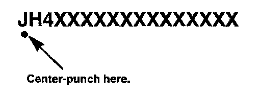
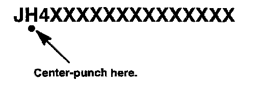
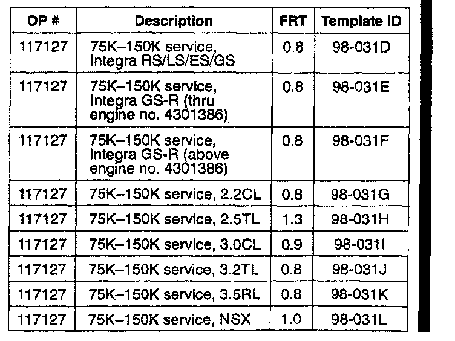
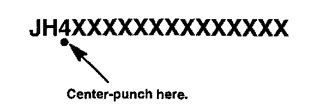
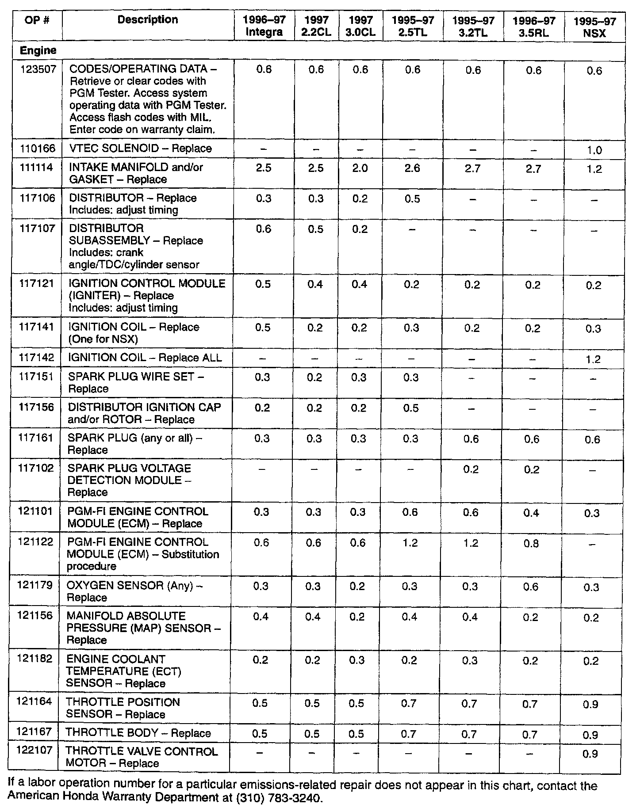
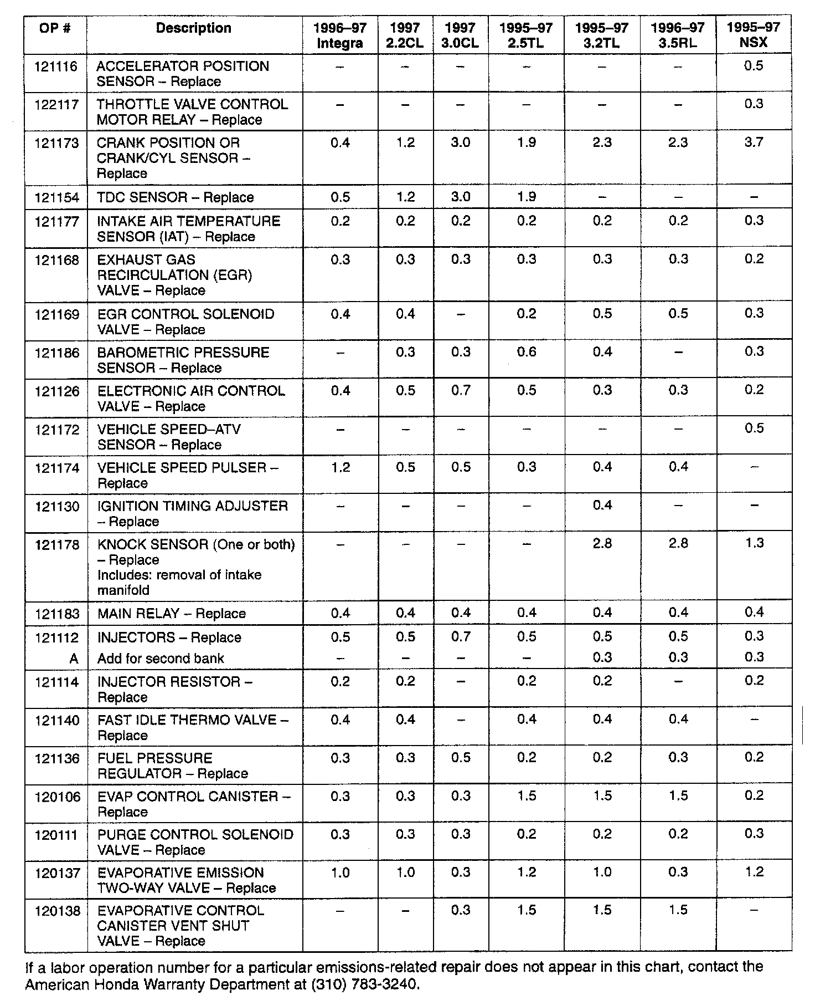
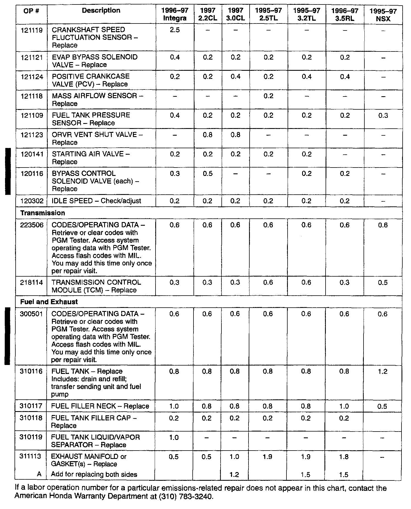
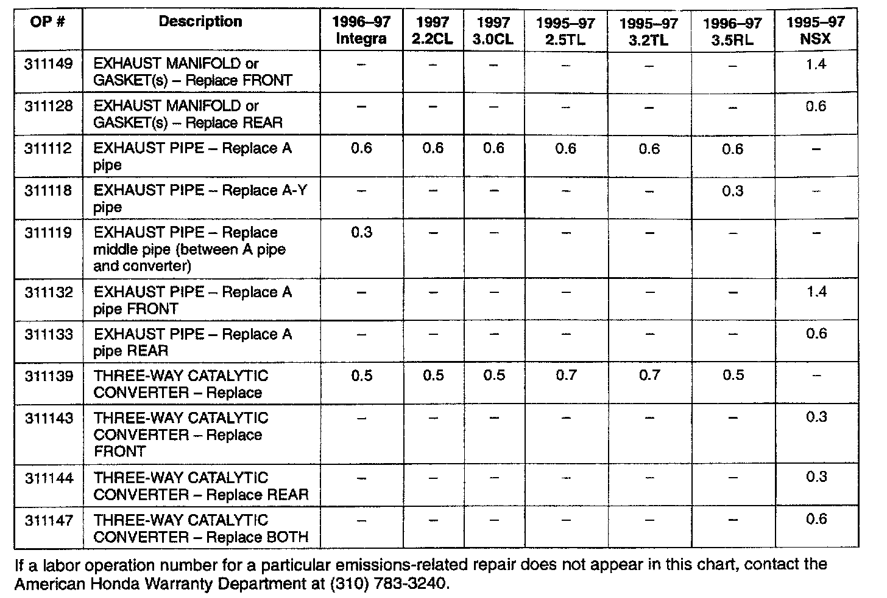
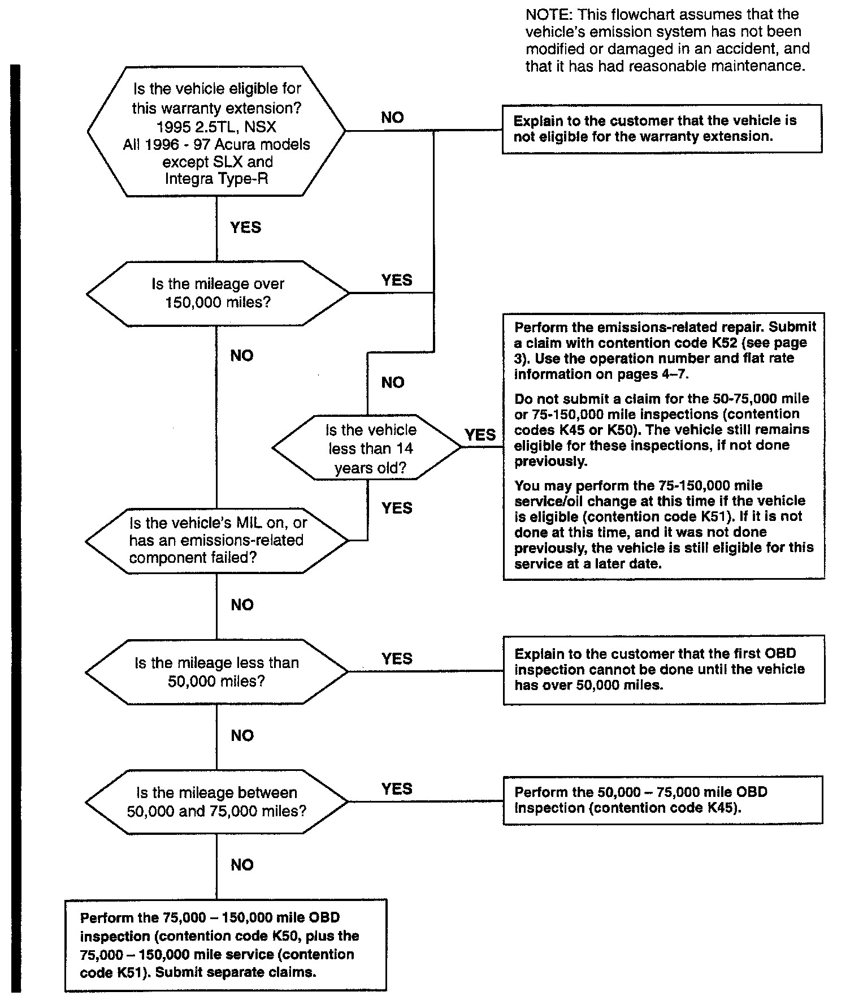

Emissions System - Warranty Extension
March 15, 1999BULLENTIN NO.
98-031
YEAR
1995-97
MODEL
All
VIN APPLICATION
See VEHICLES AFFECTED
Emissions Warranty Extension
(Supersedes 98-031, dated October 16, 1998)
BACKGROUND
The U.S. Environmental Protection Agency (EPA) and the California Air Resources Board (CARB) have asserted that the performance of the On-Board Diagnostic (OBD) system in the vehicles listed below does not fully perform in the manner that they believe is required. Specifically, they believe the OBD system is not sensitive enough to detect some misfire conditions in the engine.
In an effort to resolve this issue, Honda has agreed to extend the emissions warranty on all the affected vehicles, and to provide emissions-related services during the warranty.
VEHICLES AFFECTED
1995: 2.5TL, NSX
1996: ALL except SLX
1997: ALL except SLX and Integra Type-R
WARRANTY EXTENSION INFORMATION
American Honda is extending the emissions warranty on all affected vehicles to 14 years or 150,000 miles, whichever comes first. The basic terms of this extended warranty are the same as given with the original Federal and California emissions warranties. Federal Emi9sions Warranties - The time and mileage periods for the Emissions-related Design and Defects Warranty and the Emissions Performance Warranty are lengthened from 4 years or 50,000 miles to 14 years or 150,000 miles. All other terms, conditions, and exclusions still apply. All parts on the Emissions Parts List are now covered for 14 years or 150,000 miles, so the 8/80 notations on certain parts no longer apply.
California Emissions Warranties - The time and mileage periods for the Emissions Control Systems Defects Warranty and the Emissions Performance Warranty are lengthened from 4 years or 50,000 miles to 14 years or 150,000 miles. All other terms, conditions, and exclusions still apply. All parts on the Emissions Parts List are now covered for 14 years or 150,000 miles, so the 7/70 notations on certain parts no longer apply.
File a claim under this extension if:
^ The MIL comes on, and the cause is diagnosed as an emissions-related component.
^ The vehicle requires an emissions-related repair because it failed a mandated emissions test.
^ Any emissions-related component fails.
REPAIR TIME REQUIREMENTS
According to the terms of the agreement, American Honda and the dealer have 45 days from the date the customer first brings the vehicle in to resolve the customer's claim for repair under this warranty. If you decide to refuse a customer's claim for repair under this warranty because you suspect accidental damage, tampering, or lack of proper maintenance, notify your DTM immediately This will allow us to thoroughly investigate the customer's claim within the 45 day timeline.
ADDITIONAL SERVICES
In addition to the warranty extension, the following services are being provided to owners of affected vehicles.
Between 50,000 miles and 75,000 miles - If an affected vehicle comes in for service within that mileage range, inspect the OBD system. Follow the service manual procedure to read out any Diagnostic Trouble Codes. If any codes are found, replace the affected part or parts This inspection and any replacements are free of charge to the owner.
Between 75,000 miles and 150,000 miles - At this time, the dealer should:
^ Again inspect the OBD system and replace any parts that have caused a diagnostic trouble code.
^ Replace the distributor cap, rotor, ignition wires, and spark plugs, or
^ Replace the ignition coils and spark plugs (3.2TL, 3.5RL, NSX).
^ Change the oil and oil filter.
All of the above services are free of charge to the owner. You must use Genuine Honda parts and fluids for this service.
CUSTOMER NOTIFICATION
American Honda will send a letter to all owners of affected vehicles notifying them of the terms of the warranty extension. This will be done immediately.
American Honda will send letters to all owners of affected vehicles, reminding them of the 50-75,000 mile OBD check, five years after the release of their models. This will begin in the latter part of 1999 for the 1995 models, etc.
American Honda will send letters to all owners of affected vehicles, reminding them of the 75-150,000 mile service, nine years after the release of their models. This will begin in 2005.
WARRANTY CLAIM INFORMATION
The 50,000-75,000 mile OBD inspection, the 75,000-150,000 mile OBD inspection, the 75,000-150,000 mile service, and any emissions-related repairs must be filed on separate warranty claims. Warranty claims that combine any of these services will be rejected.
50,000-75,000 mile OBD inspection - Use the following information to file a warranty claim for the inspection.
This is an inspection only; no replacement parts should be used, or listed on the claim. Any claim filed that is outside the specified mileage range, or that shows parts used, will be debited.
If the MIL is on, do not perform the 50,000-75,000 while OBD inspection or file a warranty claim for it: refer to Emissions-related repair.
Operation number: 123508
Flat rate time: 0.3 hour
Failed part: 37823-DOJ-CD1
Defect code: 811
Contention code: K45
[NEW]
Template ID: 98-031A
Skill level: Repair Technician

Center-punch a completion mark below the first character of the engine compartment VIN.
75,000-150,000 mile OBD inspection - Use the following information to file a warranty claim for the OBD inspection.
[NEW]
This is an inspection only; no replacement parts should be used, or listed on the claim. Any claim filed that is outside the specified mileage range, or that shows parts used, will be debited.
If the MIL is on, do not perform the 75,000-150,000 mile OBD inspection or file a warranty claim for it; refer to Emissions-related repair.
Flat rate time: 123511
Operation number: 0.3 hour
Failed part: 37823-DOJ-CD2
Defect code: 812
Contention code: K50
Template ID: 98-031C
Skill level: Repair Technician

Center-punch a completion mark below the second character of the engine compartment VIN.
75,000-150,000 mile service - Use the following information to file a warranty claim for the replacement of ignition components, and oil and filter change.
[NEW]
If the applicable ignition kit is not available, do not file a template claim. Submit a regular claim listing the individual components used.

[NEW]
No additional replacement parts can be claimed. Any claim that lists additional parts, or does not show the required parts, will be debited.
Failed pant: 37823-DOJ-CD3
Defect code: 813
Contention code: K51
Skill level: Repair Technician

Center-punch a completion mark below the third character of the engine compartment VIN.
Emissions-related repair - Use the following information to file a warranty claim for diagnosis and repair.
Operation number: Refer to the charts included.
Flat rate time: Refer to the charts included.
Failed pant: Use the pant number of the replaced part.
Defect code: 814
Contention code: K52
Skill level: Repair Technician




Any warranty claims submitted for emissions-related repairs that exceed the time or mileage limit, or that list non-emissions related parts, will be debited.

Emissions Service Campaign Decision Tree